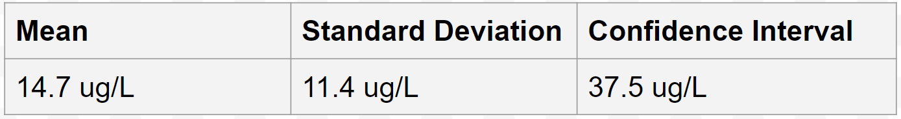
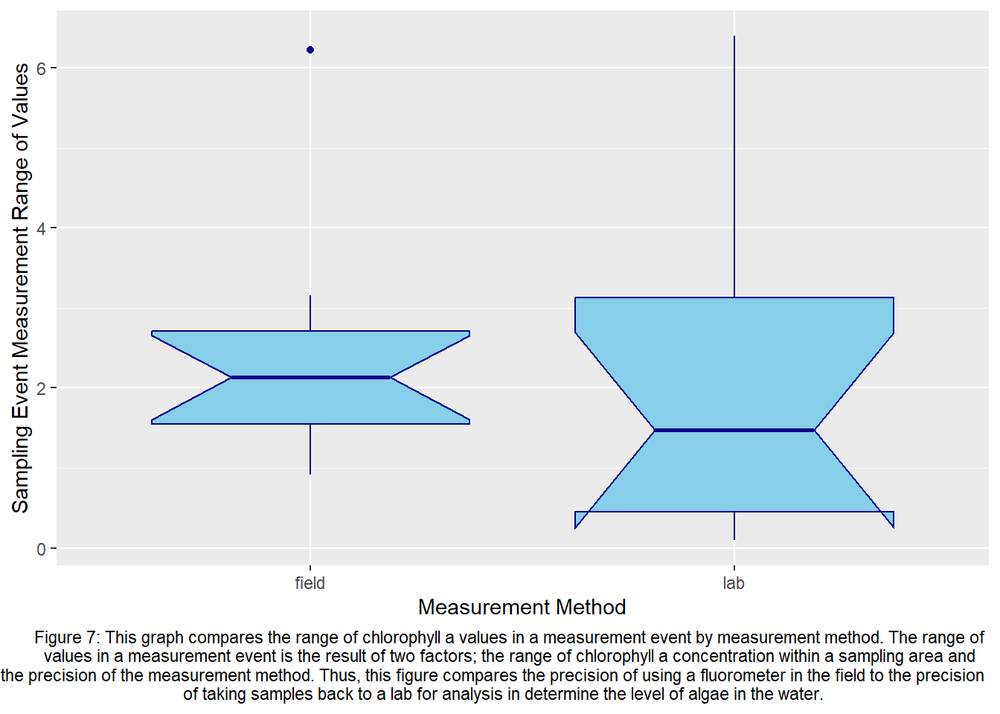
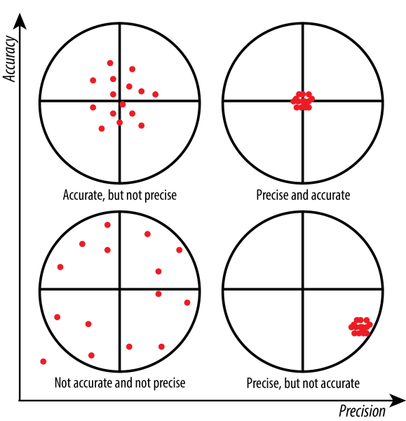
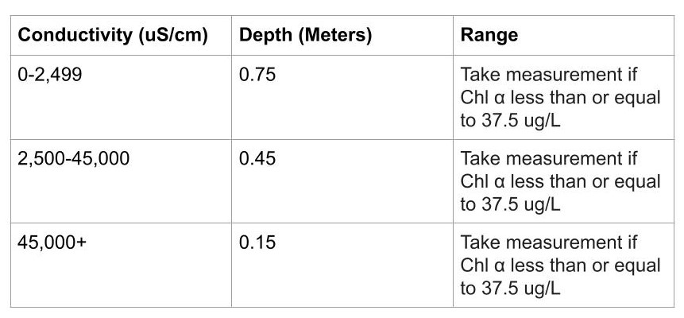
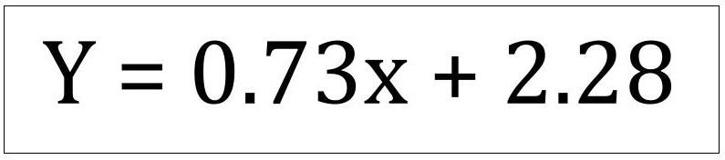

Correcting Field Fluorometer Data Accuracy for Efficient Algal level Monitoring
Manatee County Natural Resources Department-Environmental Protection Division; Intern Brendan McKnight
Narrative
In Florida waterways, algae blooms have become a common threat to the environment and the citizens of Florida. Algae blooms release chemicals into the air and water that can harm humans and kill lots of wildlife, therefore, algae level monitoring has become a necessary protocol for environmental agencies. The current method of determining algae levels is not very time and labor efficient and involves taking samples from sites and analyzing them in a lab. Current field equipment has the capabilities to determine algae levels, however it’s accuracy remains an issue due to how it works. This project investigated the accuracy of this equipment and formulated a methodology to be able to gather reliable data on algae levels efficiently while in the field. With this new method, environmental agencies can determine algae levels and respond to them faster, as well as better investigate the causes of these blooms and the best actions to prevent it.
About
An important aspect of water quality monitoring is nutrient and algae levels, When there are lots of nutrients in the water, algae populations explode causing harmful algae blooms. It is very important that government and environmental agencies can quickly and accurately monitor levels to take action and inform citizens of dangers to air quality, drinking water, seafood, etc. The Environmental Protection Agency as well as the National Oceanic and Atmospheric Administration fund programs aimed at investigating the ecology, monitoring, event response, and prevention and control of harmful algal blooms. These programs emphasize the importance for scientists to have access to efficient methods of accurate data collection to be able to investigate and respond quickly, as well as to produce more data for better investigation. This project aims to support that same agenda by developing a methodology for using field fluorometers that gives scientists an accurate way to determine the algae level of a waterway without having to take any samples back to a lab for analysis.
The Manatee County Natural Resources department has two programs that assess water quality both off the coast of Tampa and Sarasota Bay, as well as in freshwater systems that lead into those bays. These programs are named the Regional Ambient Monitoring Program (RAMP) and Surface Water Ambient Monitoring Program (SWAMP). There are 80 sites in total between the two programs where water quality is regularly assessed. Chlorophyll α analysis must be carried out to determine the concentration of algae in the water during these assessments. This involves over 9 different processes from sample event to Chlorophyll α determination that always take an entire work day. Because of the time and energy needed to do Chlorophyll α analysis for all 80 sites, data is mostly only recorded once a month at each location. This means that current data collection procedures do not produce enough results to be able to investigate. With a method of gathering this data that involves simply visiting a site and dipping a fluorometer into the water you wish to test, much more can be done in the fight to protect our waterways. Manatee County can use this access to loads more data to develop highly accurate and up to date systems for not only monitoring algae levels across the county, but developing the best strategies to prevent and control algae populations.
Fluorometers serve as an efficient method to record values of Chlorophyll α concentration in both fresh and saltwater, by emitting UV light and recording the irradiance emitted as a result of the light interaction with phytoplankton light harvesting complexes. Simply put, they send out light and record how much light is reflected back, which is representative of the density of phytoplankton in the water by Chlorophyll α concentration. The more commonly used method uses a fluorometer, however this fluorometer requires preparation of samples and is laboratory bound. This method is used instead because its accuracy is verified and there are no interfering factors that can alter data. Despite this, the time needed to collect, transport, filter, freeze, and prepare samples makes this method too inefficient to consistently monitor algae levels. Therefore, it would be beneficial to investigate the data collection trends and results using the field based fluorometer to formulate a procedure for efficient algae monitoring with adequate data accuracy.
Methodology
Different Measurement Methods
There are two different methods of determining Chlorophyll α concentration used in this methodology. The first is Fluorometer in-situ: Manta2 Multiprobe, this is referred to as the field based method. The second method is EPA Method 445.0, this is referred to as the laboratory based method. The laboratory method is a widely used method across environmental agencies and produces valid and verifiable data as approved by the Environmental Protection Agency. The field based method has issues with interference that greatly impacts data accuracy and is not commonly used due to this. The goal is to determine a revised field based method by investigating different techniques and their effect on the field based method’s error as determined by comparing measurements to laboratory based method measurements.
Correction Procedure
Below is a summarized method of correcting the field based fluorometer. To view in depth step-by-step instructions on this method, along with the list of necessary equipment, view the fluorometer correction SOP.
Collect data set from field measurements and collection that match with the lab analyzed Chlorophyll α concentration, investigate any trends, compare field to lab measurements.
Conduct field collection and measurement aimed at determining the correct depth for accurate measurements, analyze data and set depth requirements.
Determine range of algae levels that you are confident in field measurement accuracy and that serve as a range of normal algae levels.
Conduct any remaining investigations of confounding factors if found in previous data trends.
Employ depth requirements and range of confidence to create data set from field measurements and collection that match with the lab analyzed Chlorophyll α concentration.
Investigate the relationship between field and lab measurements, determine correction formula.
Implement new field data collection method to increase data collection.
Quality Assurance
The main purpose of investigating the data coming from the field based fluorometer was to determine what is causing the data to vary so much. The goal was to identify this, determine a technique that greatly reduced variance and increased the accuracy of measurements. After this is determined, employ these new techniques and investigate the data to see if there is any factor that is still affecting the accuracy or variance of data coming from the field based fluorometer. The two factors affecting measurements in Manatee County are depth and the density of algae in the water. Your environment may pose more factors affecting accuracy and variance, therefore, I encourage thorough examination of data coming in throughout the process of correcting the fluorometer to catch any and all confounding factors
Depth
Because the fluorometer determines the concentration of Chlorophyll α based off of the light that is hitting its sensors, light coming from the sun can affect the measurement. To collect data that is free of interference from, the depth at which sunlight is no longer a factor must be determined. This depth may be different for environments with different conditions, for example, in my testing, different salinity/conductivity environments had different depth requirements. This is because of a couple of reasons. One is that freshwater is a lot more clear than brackish or salt water, so sunlight travels further in the water causing freshwater depth requirements to be at depths closer to the bottom. However, salt water, because of the higher conductivity, is not as clear, and so sunlight dissipates quicker. Along with this, certain salt water bottoms can be lightly colored which can affect the measurements. This makes closer to the surface the proper depth requirement for salt water. Brackish water, because of its lower conductivity than saltwater, needs to be deeper, and commonly does not have light colored bottoms so it’s depth requirement is in between the two.


Confidence Range
One of the trends I began seeing when going through the data was that the higher the Chlorophyll α concentration, the more error between the field and lab determined concentrations. Through analyzing data it became clear that when a bloom is occurring, it is considerably more difficult to get a stable measurement of Chlorophyll α in the water. Algae are not evenly distributed throughout the water when this is happening and so water at one site can range upwards of 10 to 15 ug/L. At this point, accurate monitoring of algae levels is less urgent and the event response to that algae bloom becomes more important. Because of this, A range must be set of the Chlorophyll α concentrations that the fluorometer can accurately read. To formulate this range, I took historic records of Chlorophyll α in the waterways I was testing and determined a 95% confidence interval at 37.5 ug/L to be my upper limit. This indicated to me that Chlorophyll α levels above 37.5 ug/L are outside the normal levels found in these waterways. When measurements above 37.5 ug/L were then removed from the dataset, the accuracy of the correction formula was greatly increased. This range serves two purposes. One is to reduce the error in the correction formula and make it fit the data as best as it can. The second is to determine a level of Chlorophyll α at which alarm bells should be raised because it is outside of the normal range of algae levels, signaling that monitoring needs to be turned into event response and control. The data at your disposal may be different and you will most likely have to formulate your own method to determine your own range.

As mentioned before, it is important to go through your data as you are collecting it and investigate any relationships that may end up being confounding factors you have to come up with requirements for. This may involve developing your own method to investigate these confounding factors.
Results
Linear Regression: Field vs. Lab Measurements

Correction Factor Distribution: Uncorrected vs. Corrected Methodology

Sampling Event Measurement Range: Lab vs. Field Method

Discussion
There are two main parts to the correction process that is outlined in previous sections. Part 1 is to increase the precision of measurements, then part 2 is to increase the accuracy of measurements. This can be visualized through the following graphic.

At the beginning of the correction process, the field based fluorometer’s measurements were not accurate and not precise. Through quality assurance testing, methods were developed to specify what depth and range measurements should be taken at. With these methods implemented, the field based fluorometer’s measurements precise, but not accurate. Precise data was then compiled and compared against verified measurements to determine a correction formula. The use of this formula then corrects the accuracy of measurements, so that the field based fluorometer is able to take accurate and precise measurements of Chlorophyll α concentrations.
Quality Assurance
As seen in Figures 1, 2, and 3, depth requirements were developed for the different environments being investigated using the target piece of equipment. Freshwater measurements need to be taken close to the bottom due to the effect of sunlight, whereas saltwater and brackish water measurements need to be taken closer to the surface due to interference from light colored bottoms. Figure 4 lays out the definition of each environment and the required depth that measurements should be taken at.
Figure 5 depicts the data determining the range of Chlorophyll α concentration that the field based fluorometer can accurately measure. It is necessary to determine this range because when algae blooms occur, Chlorophyll α concentrations are not stable in the water. Therefore, any data collected for determining a correction formula is likely to have exceptionally more error than non-bloom data and forces sacrificing accuracy for increased range of use. It is also important to mention that it is not necessary for this corrected method to be able to be applied to algae levels beyond the range determined. This method is to be used to be able to continuously monitor waterways, and because this range is based off of historical records of algae levels in these waterways, any measurements outside of the range would be of concern and need addressing.

Since depth and range of measurements was affecting field based fluorometer measurements, methods had to be developed that limited their effect. By employing these methods, field based fluorometer measurements are more precise. Now that field based measurements are more precise, what was left was to determine the correction formula to make measurements more accurate.
Results
Once the previously mentioned techniques were applied to the field measurement process, a new data set was created for measurements that were taken using the correct methodology. Figure 5 displays these measurements and how they compare to the lab based measurements. This data yielded much more precision in field measurements, as expected. With around 150 data points comparing field based measurements to lab based measurements, a correction formula was determined by the line of best fit. This line of best fit having an R squared value of 0.895, indicated that the equation was accurate enough to be applied for Manatee County Environmental Protection Division data collection procedures. Therefore, the following equation is used to correct field based measurement data:

With the corrected method of field measurements and the correction formula determined, the correction process has been completed. Data coming from the field fluorometer measurements went from being not precise and not accurate, to now being precise and accurate. Figures 6 and 7 serve to show how the field based measurement method’s precision has changed from the uncorrected measurement method and how it compares to the laboratory method’s precision. Figure 6 displays the distribution of correction factors of the uncorrected and corrected methods. Uncorrected method yields a wide distribution of correction factors, illustrating why correcting this method is necessary. When you use the uncorrected method, there is no way of determining whether the fluorometer is overestimating by 2 time or 8 times the actual concentration. The corrected method however, shows to have eliminated this problem, with all the correction factors being clustered around 1.25. To put this into the perspective of figure 8, this is like going from the bottom left target to the bottom right target. Figure 7 compares the precision of the field based measurement method to the lab based measurement method through the average range of values received from each sampling event. Through this box plot, it is illustrated that the laboratory method, on average, ranges less. However, it is also illustrated that the field based method has a tighter range. For example, 25% of laboratory method’s sampling events resulted in data ranging from 3 to 7 ug/L, whereas field method’s sampling events all ranged from only 1 to 3 ug/L (with the exception of one outlier). This box plot helped Manatee County conclude that this new method of field data collection is up to par with our current method of use. In conclusion, the process of correcting the accuracy of the Turner Designs submersible fluorometer for use with the Manta2 Multiprobe was successful and will be implemented by Manatee County. This opens up many possibilities for effective algae monitoring and control along with investigation into efforts to reduce algae blooms into our waterways.
References
Manuals and SOP’s
Calibrating Eureka Manta2; Turner Designs Submersible Fluorometer
Brendan McKnight
I’d just like to thank anyone who has read through this all. I’d love to hear of any uses or any feedback to this guide if you have used it to help develop a new method of determining chlorophyll α concentration. Check out my LinkedIn and message me if you have anything to say, thanks again.